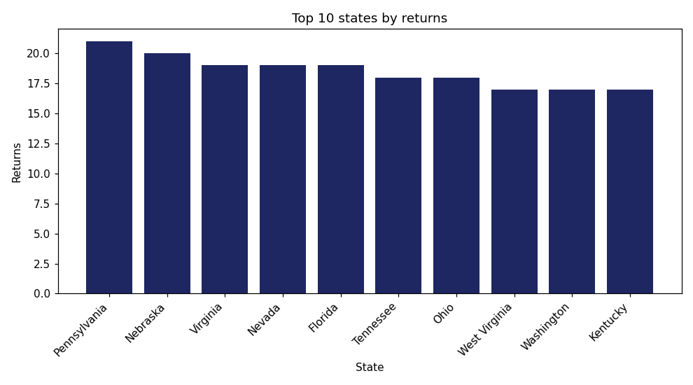
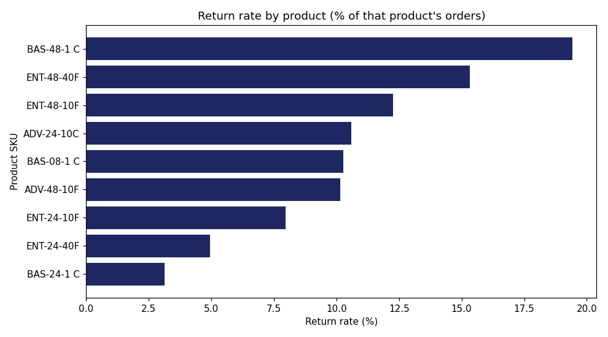

Generated 2026-10-08 03:02
DEMO DATA: this report was built from made-up sample data, not the real QuantigrationUpdates database.
| States with returns | 46 |
| Total returns | 623 |
| Average per state | 13.5 |
| Median per state | 13.5 |
| Std. deviation | 3.6 |
| Highest | Pennsylvania (21) |
| Lowest | Oregon (7) |


| SKU | ProductDescription | TotalOrders | TotalReturns | ReturnRatePct |
|---|---|---|---|---|
| BAS-48-1 C | Basic Switch 10/100/1000 BaseT 48 port | 654 | 127 | 19.42 |
| ENT-48-40F | Enterprise Switch 40GigE SFP+ 48 port | 633 | 97 | 15.32 |
| ENT-48-10F | Enterprise Switch 10GigE SFP+ 48 port | 693 | 85 | 12.27 |
| ADV-24-10C | Advanced Switch 10GigE Copper 24 port | 670 | 71 | 10.60 |
| BAS-08-1 C | Basic Switch 10/100/1000 BaseT 8 port | 613 | 63 | 10.28 |
| ADV-48-10F | Advanced Switch 10 GigE Copper/Fiber 44 port copper 4 port fiber | 680 | 69 | 10.15 |
| ENT-24-10F | Enterprise Switch 10GigE SFP+ 24 Port | 691 | 55 | 7.96 |
| ENT-24-40F | Enterprise Switch 40GigE SFP+ 24 port | 729 | 36 | 4.94 |
| BAS-24-1 C | Basic Switch 10/100/1000 BaseT 24 port | 637 | 20 | 3.14 |
| Reason | AmountOfReturns |
|---|---|
| No longer needed | 166 |
| Wrong item | 157 |
| Defective | 151 |
| Not as described | 149 |
| SKU | AmountOfReturns |
|---|---|
| ENT-48-40F | 5 |
| ENT-48-10F | 3 |
| BAS-48-1 C | 3 |
| ADV-24-10C | 3 |
| ENT-24-10F | 2 |
| BAS-08-1 C | 2 |
| ENT-24-40F | 1 |
| BAS-24-1 C | 1 |
| ADV-48-10F | 1 |
This report counts every RMA record as a return. The data does not say whether a return was caused by the product itself, shipping damage, or customer preference, so these numbers show where to look, not why returns happen.